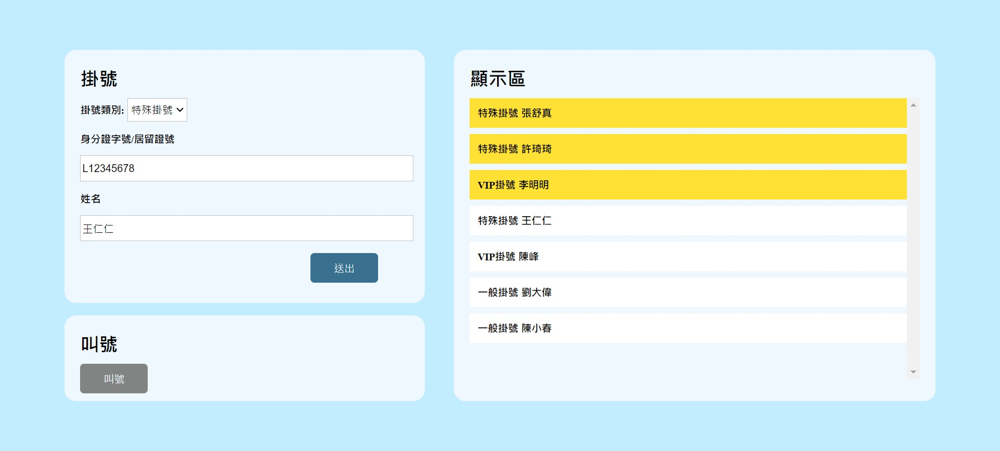
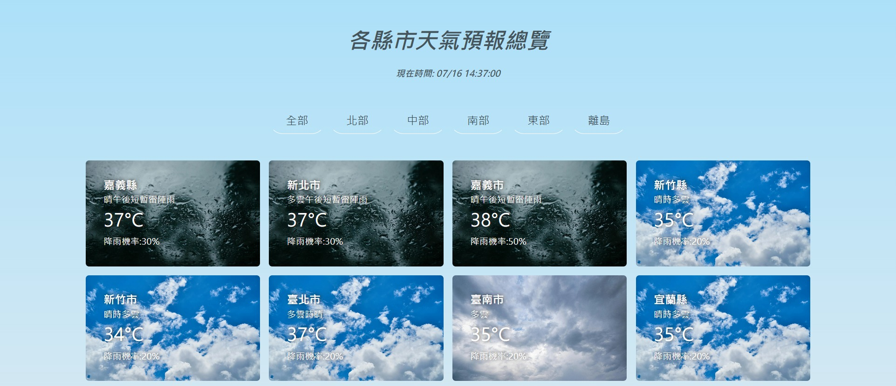

🔴MY PROJECTS🔴

Shopping Cart(PLOTTER)
- Bootstrap Layout: Utilized the Bootstrap framework for responsive design. This ensures the website maintains optimal display across various devices and screen sizes, significantly enhancing development efficiency and design consistency.
- JavaScript Shopping Cart Functionality: The shopping cart's core features are built with vanilla JavaScript, including adding, deleting, and adjusting product quantities. Each action updates the cart contents and total amount in real-time, making it easy for users to manage their shopping list.
- LocalStorage Data Storage: Implemented functionality to store user-input shopping information in LocalStorage. This ensures that even if users refresh the page or revisit the site, their cart contents are retained, providing better persistence and convenience.

Hospital Calling System
- Conditional Judgement: Using if-else to determine the next patient's calling sequence based on different conditions.
- Priority Setting: Taking into account emergency situations and patient treatment needs, the system establishes different calling priorities to ensure fairness and efficiency in the treatment order.
- Dynamic Updates: After each call, the page is dynamically updated and highlighted with different colors.

Pacman Doraemon
- Create Doraemon's sprite using ::before and ::after pseudo-elements, including the head and other details.
- Use CSS keyframes to animate a series of actions, such as chomping and moving forward.

Weather Forecast Card
- API Integration: Utilize a weather API to fetch real-time weather data based on the user's location or specified location.
- Dynamic Updates: Implement regular automatic updates of weather data or updates triggered by user interaction.
- Card Design: Display key weather information such as temperature, precipitation probability, and weather condition, presented through intuitive design elements with clear weather details.